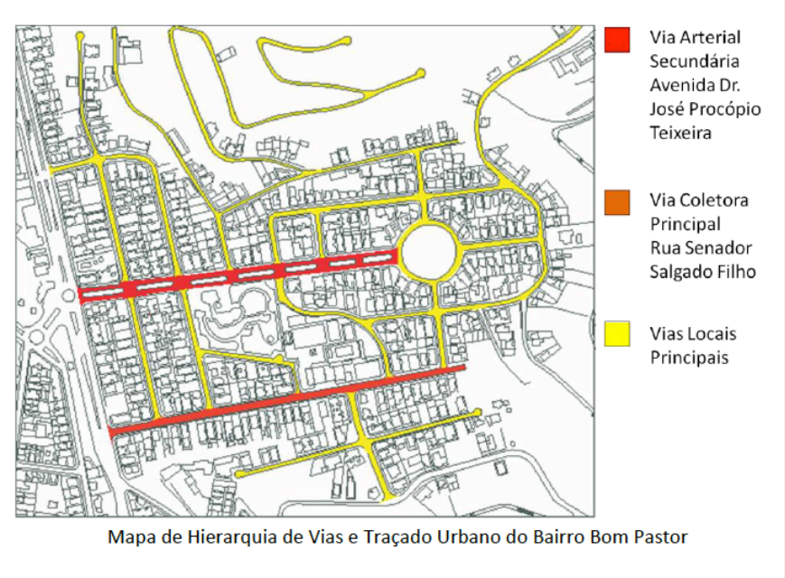

Urbanismo
O que é o Urbanismo?
Urbanismo é, em essência, a arte e a ciência de organizar a vida em coletividade dentro do espaço urbano. Não se
trata apenas de desenhar ruas ou prédios, mas de entender como a infraestrutura, o transporte, o meio ambiente e
as interações sociais se entrelaçam para tornar uma cidade funcional, sustentável e humana.
Aqui estão os pilares que sustentam uma boa prática urbanística:
Os pilares do urbanismo
- Mobilidade: Priorizar o fluxo eficiente de pessoas, não apenas de veículos.
- Zoneamento e Uso do Solo: A ideia da "cidade de 15 minutos".
- Infraestrutura Verde: Gestão de águas pluviais e áreas verdes.
- Habitação Social: Cidades inclusivas para todos.
Por que o Urbanismo importa hoje?
Com a urbanização acelerada, enfrentamos desafios como a segregação espacial e a crise climática.
Entendendo a Hierarquia das Vias
As ruas funcionam como o sistema circulatório de uma cidade.
O que é a Hierarquia Viária?
O equilíbrio fundamental aqui é entre mobilidade e acessibilidade.
1. Vias Locais (30 km/h)
Prioridade para o acesso aos imóveis e trânsito calmo.
2. Vias Coletoras (40-50 km/h)
Coletam o tráfego das ruas locais para as arteriais.
3. Vias Arteriais (60 km/h)
Avenidas principais que ligam regiões da cidade.
4. Vias de Trânsito Rápido (80 km/h)
Fluxo livre, sem semáforos ou cruzamentos.
"Uma cidade bem planejada é aquela onde a hierarquia das vias respeita a escala humana."
